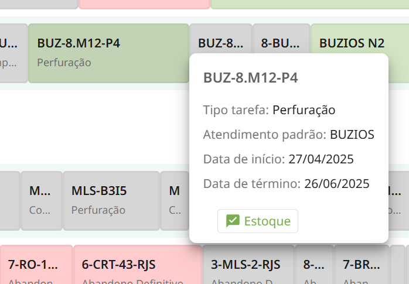
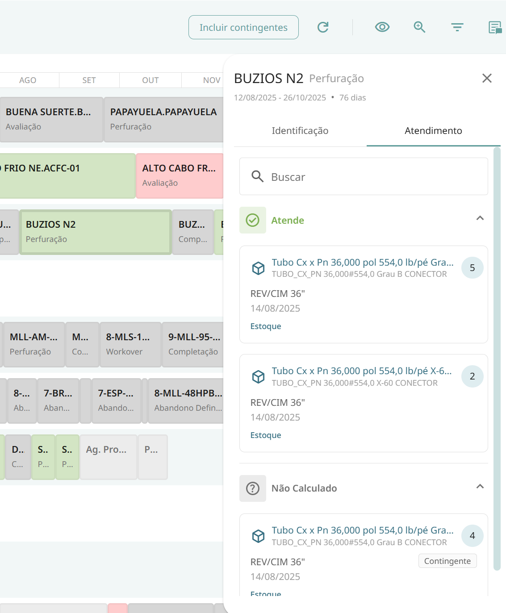
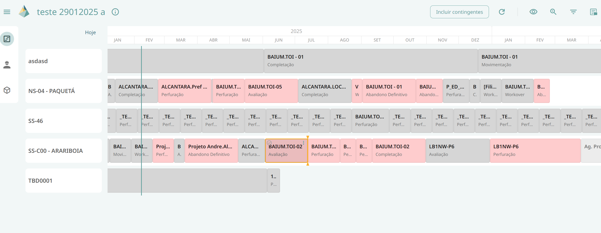
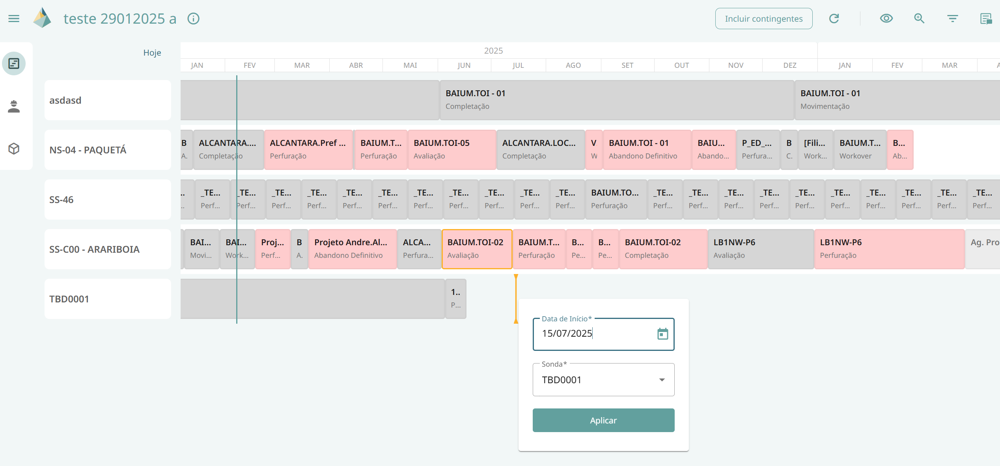
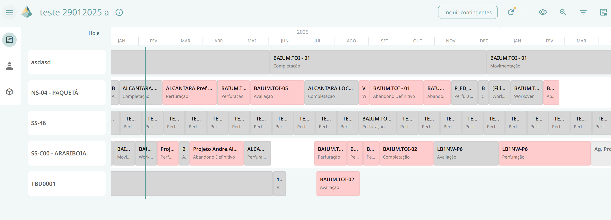
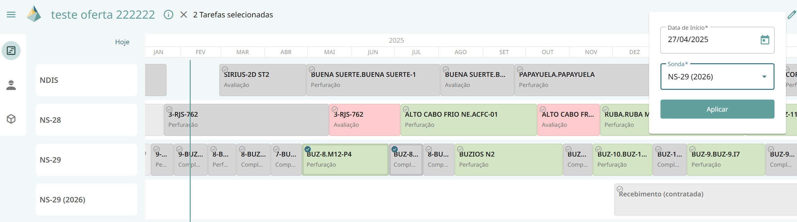
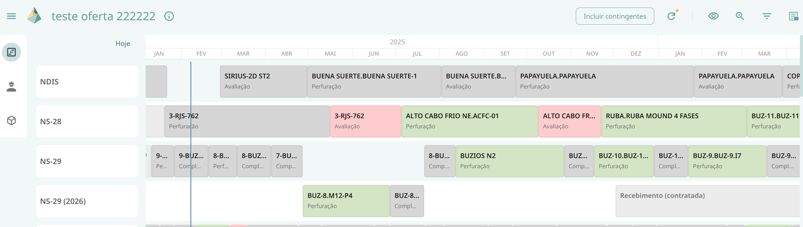
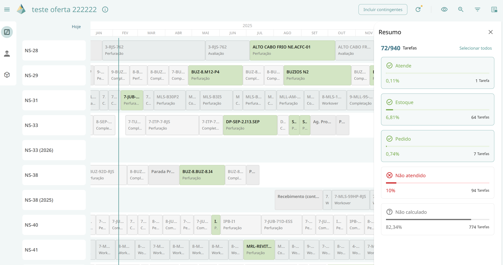

Gantt do Cenário
Permite visualizar o cenário para estudo. As cores indicam o nível de atendimento de Recursos (materiais e serviços).
Nesta interface, é exibido um cronograma em formato Gantt editável, onde são representadas as sondas e suas respectivas alocações, que podem ser tarefas ou eventos.
A cor das tarefas varia conforme o atendimento por ID Recurso, refletindo o pior caso entre as atividades nos seguintes status:
-
Atende: existem recursos disponíveis para atender a tarefa.
-
Não atende: não há recursos suficientes para atender a demanda.
-
Não calculado: tarefas no passado não são calculadas.
Nesse cronograma é possível o usuário mover uma tarefa ou múltiplas tarefas e visualizar como a alteração impacta no cálculo do atendimento de recursos.
Funcionalidades
Tooltip
Permite exibir informações adicionais ao passar o mouse sobre uma alocação.

Painel Lateral de Detalhes
Permite visualizar informações detalhadas ao clicar sobre uma alocação. As seções disponíveis são:
-
Identificação: exibe dados da tarefa.
-
Atendimento: apresenta informações sobre as atividades e recursos envolvidos.

Mover uma ou múltiplas tarefas
Via Drag-and-Drop
Permite ao usuário mover uma tarefa arrastando-a para o local desejado no cronograma. Após a tarefa ser reposicionada, um pop-up de confirmação exibirá a data de início e a sonda para a qual a tarefa foi movida. O usuário deve confirmar a edição para que a tarefa seja efetivamente movida.



Selecionando as Tarefas
Permite ao usuário selecionar uma ou várias tarefas, clicando no checkbox no canto superior esquerdo da alocação.
No topo da tela, aparecerá um contador com a quantidade de tarefas selecionadas, juntamente com um botão de editar. Ao clicar em editar, o usuário poderá definir a data de início e a sonda para a qual as tarefas serão movidas.

Ao confirmar, as tarefas serão movidas para o local escolhido, todas de forma consecutiva e em ordem de data de início.

Incluir Contingentes
Permite visualizar a tabela com os recursos contingentes.
Cálculo de Atendimento
Permite recalcular o cronograma após edições, avaliando o impacto das alterações no atendimento das tarefas. As cores das tarefas podem mudar conforme o novo cálculo.
Sempre que houver uma alteração no cronograma, o botão será sinalizado com um badge , indicando que o cálculo de atendimento está desatualizado.
Visualização de Atendimento
Permite filtrar as tarefas consideradas no atendimento. As opções disponíveis são:
-
Todos os recursos
-
Todos os materiais
-
Todos os serviços
-
Um ou mais recursos selecionados
Ao aplicar um desses filtros, as cores das tarefas refletirão o pior caso de atendimento dentro do conjunto filtrado.
Zoom
Permite ajustar a quantidade de períodos exibidos na linha do tempo.
-
Reduzir o zoom: amplia o horizonte temporal, exibindo mais anos.
-
Aumentar o zoom: detalha períodos menores, focando em um ano específico.
Filtro
Permite filtrar as tarefas de acordo com as seguintes categorias:
-
Cluster
-
Bacia
-
Projeto
-
Tipo de serviço
-
Tipo de tarefa
-
Atendimento padrão
-
Sondas
O filtro funciona como uma interseção entre as categorias selecionadas.
Resumo
Permite visualizar o indicador de quantidade de tarefas por atendimento ID Recurso. Esse painel lateral também funciona como um filtro de tarefas.
